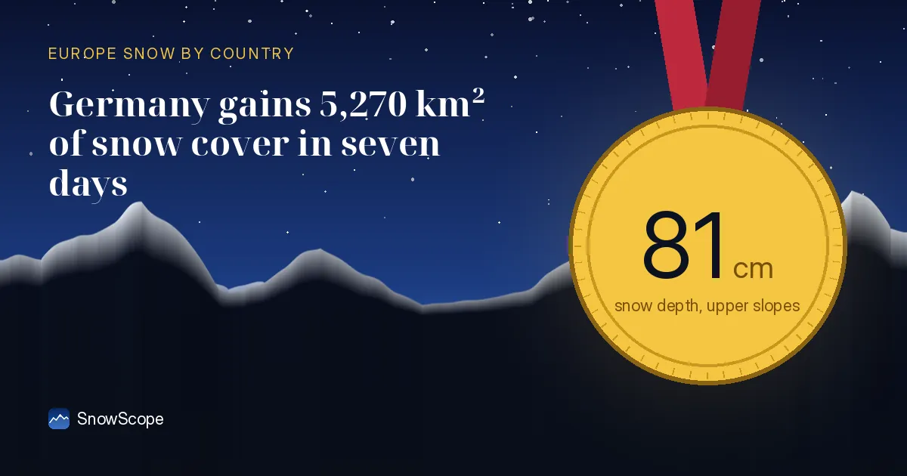

Germany gains 5,270 km² of snow cover in seven days
Germany's white ground more than doubled in one week: 5,270 km² of new snow cover appeared between 15 and 22 November. The jump comes from two storm systems that swept the Alps and high ground, with the Allgäu Alps picking up 47 cm in just three days.
See the live snow forecast for Zugspitze in the SnowScope appSnow depth, powder alerts and the 3D map, free.
How the week's storms reshaped the snow map
A week ago, only 5,460 km² of Germany was snow-covered. Today, 10,730 km² carries white ground. The satellite data shows a sharp turn this past weekend: on 20 November, snow covered just 1,790 km², then a storm system moved in and within two days the area jumped to 10,730 km². That's the kind of change we watch for in early November.
The growth wasn't even across the country. The Allgäu Alps and Bavarian Alps, which form the high spine of the Alps in south Bavaria, caught the heaviest snow. The Allgäu Alps recorded 47 cm of fresh snow in 72 hours; the Bavarian Alps saw 39 cm. These are modelled estimates for the areas, not point measurements, but they show where the storms focused their energy.
| Day | White area | Most new snow in 3 days | Deepest resort |
|---|---|---|---|
| Monday 16 November | 2,110 km² | 2 cm | Zugspitze |
| Tuesday 17 November | 1,470 km² | 2 cm | Zugspitze |
| Wednesday 18 November | 1,510 km² | 4 cm | Zugspitze |
| Thursday 19 November | 1,820 km² | 6 cm | Zugspitze |
| Friday 20 November | 1,790 km² | 10 cm | Fellhorn/Kanzelwand |
| Saturday 21 November | 3,050 km² | 18 cm | Zugspitze |
| Sunday 22 November | 10,730 km² | 23 cm | Zugspitze |

The snow line is still climbing
Despite the snow dump, the snow line sits at 800 m today. That's high for late November. At lower elevations, snow cover is patchy: between 500 and 1,000 m, only 17 percent of the ground is white. Above 1,000 m the picture changes fast. Between 1,000 and 1,500 m, 94 percent of slopes now carry snow, with an average depth of 7 cm. Above 1,500 m, coverage is complete and depths build steadily: 19 cm between 1,500 and 2,000 m, and 27 cm between 2,000 and 2,500 m.
Early-season snow at lower elevations can be thin and patchy. Rocks may still be showing through. Above 1,500 m, the picture is more reliable: a continuous snow base is now in place.

Zugspitze leads as the deep-snow resort
Among Germany's ski areas, Zugspitze holds the most snow: 81 cm measured on the ski runs today, with 39 cm arriving in the past 72 hours. Steibis, Fellhorn/Kanzelwand, Grasgehren and Hörnerbahn Bolsterlang all show 43-46 cm. These five resorts top the list; they sit between 1,662 and 2,627 m elevation, which explains their depth advantage. Of Germany's 231 ski areas, 112 now have measurable snow cover—more than half.
Fresh snow is still coming
The storms aren't finished. Our snow model predicts 9 cm of new snow in the next three days across the best-hit areas, with another 7 cm possible in the following four days. The heaviest single day looks to be 26 November, when 9 cm is forecast. This means the snow cover will continue to expand downslope and the depths will keep building through the end of the month.
Ahead: more snow by early December
Looking further out, a second pulse of snow is likely between 30 November and 6 December, when the model shows up to 18 cm possible in some areas. That second week of December often brings stable snow across the high Alps. For now, the trend is clear: snow is arriving, covering more ground each day, and depths are climbing fast at altitude.
How Germany compares to neighbours
Austria is ahead: 60 percent of its high terrain is white, with Stubaier Gletscher holding 67 cm and another 25 cm forecast in seven days. Switzerland is further ahead still, at 71 percent coverage, with Glacier 3000 showing 74 cm and up to 49 cm more expected. Both neighbours have higher average elevation and caught the storms earlier in the week. Germany is catching up fast.
Tips for skiers
- Check the official avalanche bulletin for the Bavarian and Allgäu Alps before going off-piste; fresh snow at altitude raises avalanche hazard for the next few days.
- Above 1,500 m you now have a solid base; below 1,200 m, look for patches and thin coverage, especially on south-facing slopes.
- Expect more snow through the end of November. Early December brings another chance for significant accumulation.
- Zugspitze, Steibis and Fellhorn/Kanzelwand have the deepest snow now and will be your safest early-season choices.
- Watch the snow line: if it drops below 800 m in the next storm, lower resorts will start to become skiable.
About these numbers
Resort snow depths are the deepest snow on the resort's upper slopes from the SnowScope snow model (about 1 km, run of 22 November); they are estimates for an area, not a measurement at one point. Station values are measurements on the date shown. Forecasts can change. Always read the official avalanche bulletin before going off-piste.
Cite this report
For research, teaching or the press: the numbers and charts are free to reuse under CC BY 4.0 with this citation.
SnowScope (2026), Germany gains 5,270 km² of snow cover in seven days, https://snowscope.app/blog/en/2026/11/germany-snow-cover-gain-this-week-22-november-2026.html, accessed 2026-11-22
SnowScope (Atlas Labs). (2026, November 22). Germany gains 5,270 km² of snow cover in seven days. SnowScope snow reports. https://snowscope.app/blog/en/2026/11/germany-snow-cover-gain-this-week-22-november-2026.html
BibTeX
@misc{snowscope2026germanysnowcovergainthis,
author = {{SnowScope (Atlas Labs)}},
title = {Germany gains 5,270 km² of snow cover in seven days},
year = {2026},
month = nov,
howpublished = {\url{https://snowscope.app/blog/en/2026/11/germany-snow-cover-gain-this-week-22-november-2026.html}},
note = {Published 2026-11-22 12:12 UTC; accessed 2026-11-22}
}· CC BY 4.0 · Methods, data and tools →
Zugspitze: snow and temperature by height, this winter vs last (tools) →
Follow Zugspitze
Free: a message when fresh snow is coming, and the forecast every morning.
More snow reports

Snow is falling on Slovenia's ski mountains today: about 37 cm on Kanin and 21 cm on Krvavec. Where the snow lies, how it compares with past winters, and the next snowy day.

Tornik on Zlatibor had up to 39 cm on its upper slopes on 15 November 2026; by Wednesday it had melted. Kopaonik barely turned white. The week day by day and what comes next.

Pick a region, dates, budget and what matters; get every resort ranked with the likely snow at the start, the pass, hotel and food per person, chalets to book, and a game mode.